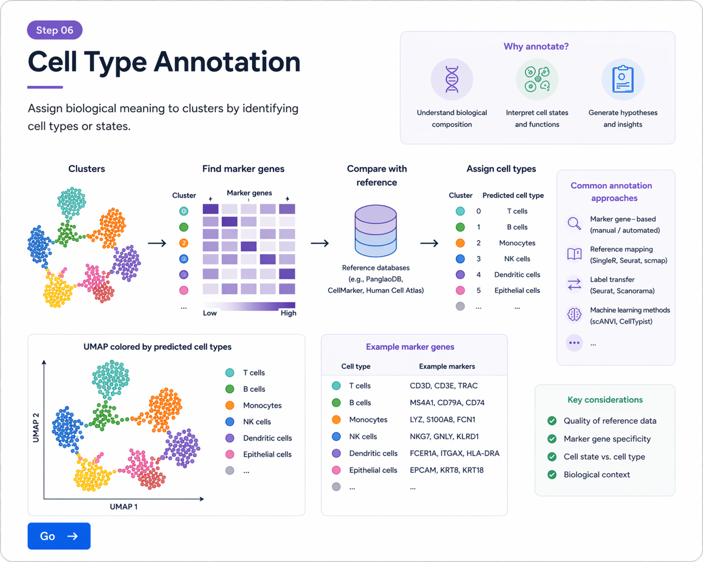

clustering으로 나뉜 세포 집단은 아직 번호만 붙은 상태입니다. Annotation 단계에서는 각 cluster의 marker gene를 확인하고, known biology와 reference 정보를 바탕으로 세포 유형(cell type)을 해석합니다.
Seurat에서는 FindAllMarkers()를 이용해 각 cluster에서 특이적으로 높은 유전자를 찾을 수 있습니다.
markers <- FindAllMarkers(
obj,
only.pos = TRUE,
min.pct = 0.25,
logfc.threshold = 0.25
)
head(markers)
결과 테이블에는 보통 cluster 번호, gene 이름, average log fold change, 발현 비율 등이 포함됩니다.
각 cluster의 상위 marker를 확인하여 어떤 세포 유형인지 추정할 수 있습니다.
library(dplyr)
top10 <- markers %>%
group_by(cluster) %>%
slice_max(order_by = avg_log2FC, n = 10)
top10
Annotation에서는 표만 보는 것이 아니라, 반드시 시각화와 함께 확인하는 것이 좋습니다.
FeaturePlot(obj, features = c("CD3D", "MS4A1", "EPCAM", "COL1A1"))
DotPlot(
obj,
features = c("CD3D", "CD79A", "EPCAM", "COL1A1", "PECAM1", "LYZ")
) + RotatedAxis()
VlnPlot(obj, features = c("CD3D", "MS4A1", "EPCAM"), ncol = 3)

marker gene 발현 패턴을 바탕으로 cluster의 biological identity를 해석합니다.
| 세포 유형 | 대표 marker gene 예시 |
|---|---|
| T cells | CD3D, CD3E, TRBC1, IL7R |
| B cells | MS4A1, CD79A, CD79B, CD74 |
| Myeloid / Monocytes | LYZ, S100A8, S100A9, FCN1, CTSS |
| Epithelial cells | EPCAM, KRT8, KRT18, KRT19 |
| Fibroblasts | COL1A1, COL1A2, DCN, LUM |
| Endothelial cells | PECAM1, VWF, EMCN, KDR |
해석이 끝나면 cluster 번호를 실제 cell type 이름으로 바꿀 수 있습니다.
new.cluster.ids <- c(
"T cells",
"B cells",
"Myeloid cells",
"Epithelial cells",
"Fibroblasts",
"Endothelial cells"
)
names(new.cluster.ids) <- levels(obj)
obj <- RenameIdents(obj, new.cluster.ids)
DimPlot(obj, reduction = "umap", label = TRUE)
cluster 수와 이름 개수는 반드시 일치해야 합니다.
obj$celltype <- Idents(obj)
head(obj@meta.data)
DimPlot(obj, group.by = "celltype", label = TRUE)
수동 annotation 외에도 reference dataset을 사용하여 annotation을 보조할 수 있습니다. 대표적으로 SingleR 같은 도구가 자주 사용됩니다.
library(SingleR)
library(celldex)
ref <- HumanPrimaryCellAtlasData()
pred <- SingleR(
test = GetAssayData(obj, slot = "data"),
ref = ref,
labels = ref$label.main
)
head(pred$labels)
# marker gene 찾기
markers <- FindAllMarkers(
obj,
only.pos = TRUE,
min.pct = 0.25,
logfc.threshold = 0.25
)
# 상위 marker 확인
library(dplyr)
top10 <- markers %>%
group_by(cluster) %>%
slice_max(order_by = avg_log2FC, n = 10)
top10
# 시각화
FeaturePlot(obj, features = c("CD3D", "MS4A1", "EPCAM", "COL1A1"))
DotPlot(obj, features = c("CD3D", "CD79A", "EPCAM", "COL1A1", "PECAM1", "LYZ")) + RotatedAxis()
# cluster 이름 변경
new.cluster.ids <- c("T cells", "B cells", "Myeloid cells", "Epithelial cells", "Fibroblasts", "Endothelial cells")
names(new.cluster.ids) <- levels(obj)
obj <- RenameIdents(obj, new.cluster.ids)
# metadata 저장
obj$celltype <- Idents(obj)
# 최종 시각화
DimPlot(obj, group.by = "celltype", label = TRUE)
FindAllMarkers()로 cluster별 marker gene를 찾을 수 있습니다.FeaturePlot, DotPlot, VlnPlot으로 marker 발현을 시각화해 확인합니다.